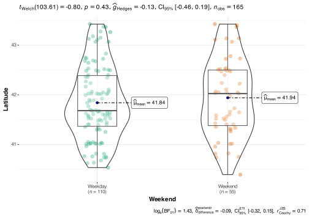

Worked Example - A Tourism Focused Analysis of Iowan Farmers Markets
Dr Helen Greatrex
IMPORTANT
This report is the level I would expect from a graduate student with
this assignment, but I want you to aim high. The entire thing from start
to end took me 3 hrs, so it’s also possible for you by the end of the
semester.
WANT TO DOWNLOAD THE UNDERLYING CODE? CLICK HERE:
Background R Set-Up
Note, I would normally hide this entire section, using code chunk option include=FALSE so that so they are invisible. I want you to keep them in, so I can see your code.
# Libraries
library(sp)
library(sf)
library(tidyverse)
library(tmap)
library(readxl)
library(skimr)
library(spatstat)
library(ggstatsplot)To see how I came up with this specific code, see the background workings.
# INITIAL CODE
# clear the workspace
rm(list=ls())
# Read in the data
IA_market <- readxl::read_excel("./Data/Farmers_Markets_Iowa.xlsx",na="NA")
# Remove unreal longitudes
IA_market <- IA_market[which(IA_market$X > -990),]
# Remvbe NAs
IA_market <- IA_market[complete.cases(IA_market$X), ]
IA_market <- IA_market[complete.cases(IA_market$Y), ]
# Remove that one point outside Iowa
IA_market <- IA_market[which(IA_market$X < -90),]
# Choose Columns
IA_market <- IA_market[,c("X","Y","FID","City","County", "Market_Name","Weekday")]
# set up a new column
IA_market$Weekend <- IA_market$Weekday
#and edit the two categories
IA_market$Weekend[which(IA_market$Weekday %in% c("Saturday",
"Sunday"))] <- "Weekend"
IA_market$Weekend[which(IA_market$Weekday %in% c("Monday","Tuesday",
"Wednesday","Thursday", "Friday"))] <- "Weekday"
# Make family/grouped/categorical variables into factors
IA_market$City <- as.factor(IA_market$City)
IA_market$County <- as.factor(IA_market$County)
IA_market$Weekday <- as.factor(IA_market$Weekday)
IA_market$Weekend <- as.factor(IA_market$Weekend)
# Rename
names(IA_market)[1] <- "Longitude"
names(IA_market)[2] <- "Latitude"
# Make spatial
IA_market.sf <- st_as_sf(IA_market,coords=c("Longitude","Latitude"), crs=4326)
# Make a UTM version
IA_market.sf.utm <- st_transform(IA_market.sf,3744)
# Make a ppp version
IA_market.ppp <- as.ppp(IA_market.sf.utm)Introduction
Intended Audience: Matt Kodis, Research Analyst at Iowa Tourism (https://www.traveliowa.com/contact-us/). I have been asked to provide a spatial analysis of farmers markets in the State, to support tourism efforts.
Background

There are over 200 farmers markets in Iowa, providing direct marketing outlets for fresh locally grown produce; baked goods; and a variety of products from eggs to meat, wine, cheese and crafts.
Understanding the spatial pattern of farmers markets is crucial for enhancing our tourism strategies in Iowa. It allows us to make informed decisions that can significantly impact our marketing efforts and the overall visitor experience. First and foremost, having this knowledge enables us to effectively target and engage potential tourists. We can tailor our promotional materials and itineraries to highlight the farmers markets that align with their interests and preferences. It’s not just about quantity; it’s about showcasing the right markets in the right places to attract the right audience.
There has been some research on this topic in other areas of the USA. For example, Tong et al1 (2012) theoretically modeled the placement of new markets in Arizona; Mack and Tong2 (2015) used surveys to characterize the spatial and temporal patterns of farmers’ market visits; and Sage3 (2012) used point pattern analysis to consider the pattern of market locations in Washington State.
Dataset
The specific dataset I am using for this analysis is obtained from the Iowa State GIS portal4, of 175 markets in 2018. This reported that the original source of the data was the Iowa Department of Agriculture and Land Stewardship Data Directory (https://www.idalsdata.org/.)), which contains the details of all licensed farmers markets currently in Iowa. The data is collected from license records, so should be complete across the state.
Importantly, the GIS portal was last updated on 15 November 2018 - so the data I am analyzing is not fully up to date. For example, my analysis will not reflect recent updates or closures due to the COVID pandemic. Given time for a more detailed analysis, I would pull the most recent data directly from IDALS.
The data will also not cover markets in other States that are just on the border with Iowa. This means we might get ‘edge effects’ in our spatial analysis. For example, as shown in the Figure below - there are towns to the West of Iowa that spread across the border. It would be reasonable to assume there were more than 2 markets in this town, but we only have data for the Iowan side.

Structure of the data
As shown below in the code, there are 165 markets available for study after missing data was taken into account. The location is stored in Lat/Long format and the data has these variables available for study.
Longitude: The longitude of each market in degreesLatitude: The latitude of each market in degreesFID: This is the unique ID of each market applied by the Iowa GIS portalCity: The name of the city the market is held inCounty: The name of the Iowa county the market is held inMarket_Name: The name of the marketWeekday: The day of the week that the market is held on
Quality control/Data wrangling
Some quality control was carried out before the data was analysed:
- A few markets had corrupted or missing locations. These were
removed.
- Only relevant variables were kept for analysis. The columns
Open_Hours, Open_Dates and Location were
removed but could be analysed at a later date.
- The County, Weekday, and City columns
were converted to factor to aid analysis.
- The data was converted to a spatial version using the package sf and
the UTM map projection for Iowa was applied. A spatial version of the
data for point package analysis (IA_market.ppp) was created.
Exploratory analysis
# Again, professionally I would hide this code chunk and use
# "inline code" to show my results.
# Please leave yours visible for grading
# Rows/columns
dim(IA_market)## [1] 165 8## Longitude Latitude FID City
## Min. :-96.56 Min. :40.39 Min. : 1.00 Des Moines : 7
## 1st Qu.:-94.24 1st Qu.:41.36 1st Qu.: 45.00 Davenport : 5
## Median :-93.10 Median :41.70 Median : 86.00 Cedar Rapids: 4
## Mean :-93.10 Mean :41.87 Mean : 86.28 Ottumwa : 4
## 3rd Qu.:-91.68 3rd Qu.:42.48 3rd Qu.:127.00 Ames : 3
## Max. :-90.18 Max. :43.43 Max. :175.00 Atlantic : 3
## (Other) :139
## County Market_Name Weekday Weekend
## POLK : 11 Length:165 Friday :12 Weekday:110
## BLACK HAWK: 7 Class :character Monday :10 Weekend: 55
## LINN : 7 Mode :character Saturday :52
## SCOTT : 7 Sunday : 3
## MARION : 5 Thursday :32
## DES MOINES: 4 Tuesday :25
## (Other) :124 Wednesday:31##
## Friday Monday Saturday Sunday Thursday Tuesday Wednesday
## 12 10 52 3 32 25 31There are 165 in the dataset. The majority of the markets happen on weekdays. For tourism, it might be worth considering the markets that are open on weekends [note - I then went back up to the top and added in the weekend column].
As expected, most markets happen in towns and cities. A glance at the spatial distribution also suggests that there are more markets open at weekends in major cities and in the North East of Iowa.
We could investigate this by looking at a boxplot of the latitudes of the two classes of market.
ggbetweenstats(data = IA_market,x = Weekend,y = Latitude,
centrality.point.args=list(color = "darkblue"))
This doesn’t show much different, so maybe markets that are BOTH weekday and weekend are plotted on top of each other. Let’s check
IA_market.sf.utm.Weekend <- IA_market.sf.utm[which(IA_market.sf.utm$Weekend == "Weekend"),]
IA_market.sf.utm.Weekday <- IA_market.sf.utm[which(IA_market.sf.utm$Weekend == "Weekday"),]Yes - this shows that many points were on top of each other. [Note, in a professional report this would all go in background workings, but for you I want to see it!]
ETC ETC. For example if you have numeric values, you could make histograms
Tong, D., Ren, F., & Mack, J. (2012). Locating farmers’ markets with an incorporation of spatio-temporal variation. Socio-Economic Planning Sciences, 46(2), 149-156. https://www.sciencedirect.com/science/article/pii/S0038012111000346↩︎
Mack, J., & Tong, D. (2015). Characterizing the spatial and temporal patterns of farmers’ market visits. Applied Geography, 63, 43-54. https://www.sciencedirect.com/science/article/pii/S0143622815001496↩︎
Sage, J. L. (2012). A geographic exploration of the social and economic sustainability of farmers’ markets and the rural communities that make them work. Washington State University. PhD Thesis https://www.proquest.com/docview/1032783987↩︎